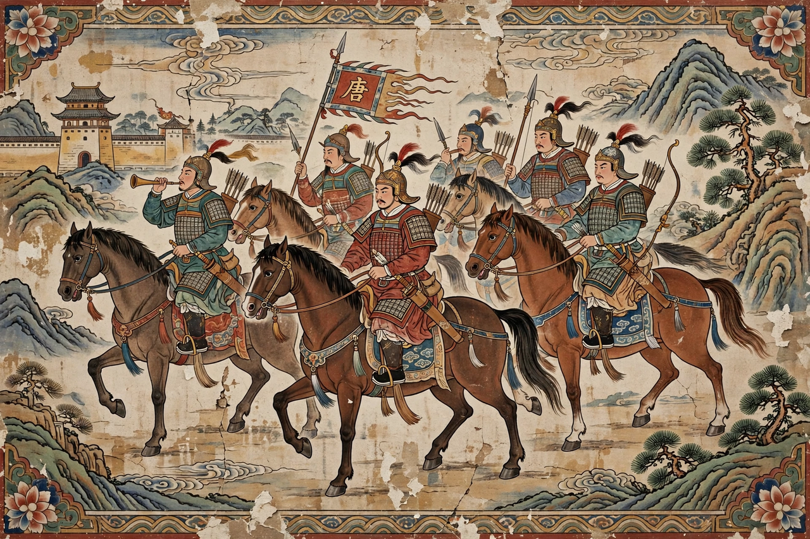

An Lushan Rebellion

Dates: December 755 – February 763
Combatants: Tang dynasty vs Yan (An Lushan, then Shi Siming)
Key figures: Emperor Xuanzong, Yang Guifei, An Lushan, Shi Siming, Guo Ziyi
Result: Tang victory at catastrophic cost
The An Lushan Rebellion was a devastating civil war in Tang dynasty China lasting from 755 to 763. Led first by the frontier general An Lushan and continued after his death by Shi Siming, it shattered the Tang golden age, killed or displaced millions, and permanently weakened central authority.
Origins
An Lushan, a general of Sogdian and Turkic origin, rose through the frontier armies (jiedushi) of the northeast, winning the favour of Emperor Xuanzong and his consort Yang Guifei. Holding three military governorships and some 160,000 troops, and fearing the hostility of chancellor Yang Guozhong, An rebelled in December 755, proclaiming himself emperor of a new Yan dynasty.
Course of the war
Rebel forces swept south, taking Luoyang and, in 756, the capital Chang'an. Xuanzong fled toward Sichuan; en route his guards mutinied at Mawei station and forced the execution of Yang Guifei — one of the most famous episodes in Chinese history. The crown prince ascended the throne as Suzong and, with loyalist generals Guo Ziyi and Li Guangbi and Uyghur cavalry assistance, recaptured both capitals in 757. An Lushan was murdered by his own son in 757; Shi Siming briefly revived the rebellion before his death in 761, and the last Yan forces surrendered in 763.
Consequences
Census figures collapsed from about 53 million in 755 to some 17 million in 764 — though much of the drop reflects lost registration rather than deaths, real mortality was enormous. The Tang never regained control of the northeast, whose governors became semi-hereditary; fiscal power shifted to the salt monopoly and the south. The rebellion also turned Tang policy inward, curtailed the cosmopolitan openness of the early dynasty, and is traditionally seen as the turning point of the dynasty's fortunes.
See also: Tang dynasty · Chang'an · History of China